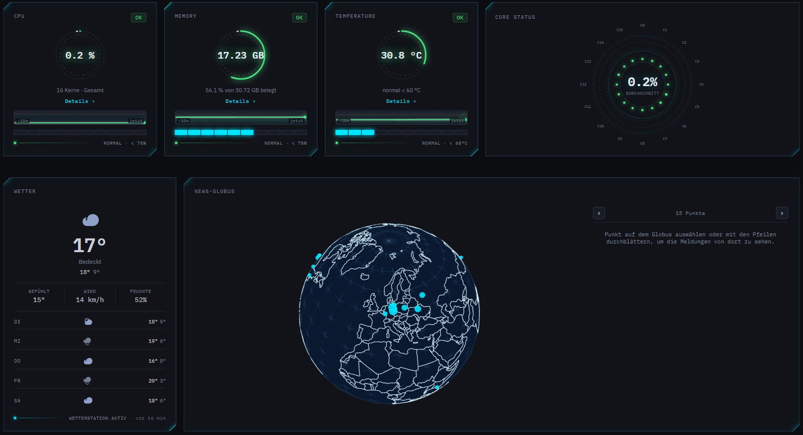

OxidPanel ist mein selbst entwickeltes Dashboard für den Home-Server. Es bündelt Systemüberwachung, einen News-Aggregator und eine Medienbibliothek in einer Oberfläche.
Das Dashboard im Betrieb
Ausschnitt der Startseite: Live-Systemwerte, Wetter und der News-Globus.

Funktionen
- Systemüberwachung: Live-Werte zu CPU (gesamt und pro Kern), Arbeitsspeicher, Temperaturen, Last, Festplatten und Netzwerkdurchsatz, dazu die aktivsten Prozesse, Verlaufsgrafiken und eine Wetter-Kachel. Die Anzeige aktualisiert sich selbst und pausiert, solange der Tab nicht sichtbar ist.
- News: Nachrichten und IT-Security-Meldungen aus mehreren Quellen, filterbar über eigene Schlagwörter. Ein Globus zeigt, woher die Meldungen stammen.
- Medien: Film- und Serienbibliothek mit Streaming direkt im Browser, Favoriten, zuletzt Gesehenem und gespeichertem Fortschritt. Bedienbar auch per Tastatur oder TV-Fernbedienung.
News-Aggregator
Die Meldungen kommen aus der Tagesschau, aus IT-Security-Feeds, der CISA-Liste aktiv ausgenutzter Schwachstellen, CVE-Meldungen von NVD und GitHub sowie aus mehreren Subreddits. Einmal täglich läuft eine komplette Aktualisierung im Hintergrund. Zusätzlich lädt das Panel einzelne Feeds bei Bedarf nach, höchstens alle 30 Minuten.
- Doppelte Meldungen werden auch quellenübergreifend über die URL erkannt
- Eigene Schlagwörter werden automatisch in Titel und Anriss gesucht
- Ortserkennung per NLP (spaCy, Deutsch und Englisch) für den News-Globus
- Fehlende Vorschaubilder werden über Open-Graph-Daten nachgeladen
- Meldungen, die älter als vier Tage sind, werden automatisch aufgeräumt
Adaptives Streaming mit HLS
Videos werden erst beim ersten Abspielen mit FFmpeg in HLS umgewandelt, in bis zu drei Qualitätsstufen (360p, 720p, 1080p). Die niedrigste Stufe entsteht zuerst, sodass das Video schon läuft, während die höheren noch berechnet werden. Hochskaliert wird nie: Ein 720p-Film bekommt keine 1080p-Stufe. Die fertigen Umwandlungen landen in einem Cache, der sich automatisch erneuert, wenn sich das Verfahren ändert.
Umsetzung
Backend in Python mit FastAPI, Frontend als Vue-3-SPA mit TypeScript und Vite, die FastAPI direkt mit ausliefert. Die News liegen in SQLite, ein Scheduler im selben Prozess hält sie aktuell, die Videos wandelt FFmpeg um. Gebaut wird in einem mehrstufigen Docker-Build: Eine Stufe baut das Frontend, die zweite liefert alles aus. Alle dauerhaften Daten liegen in einem einzigen Ordner, das hält Backups einfach.
backend: python + fastapi
frontend: vue 3 + typescript + vite
database: sqlite
scheduler: apscheduler (in-process)
nlp: spacy (de, en)
media: ffmpeg -> hls (360p / 720p / 1080p)
deploy: docker (multi-stage)Herausforderungen
Reddit erlaubt ohne Anmeldung nur etwa eine Anfrage pro Minute. Deshalb ruft das Panel die Subreddits nacheinander mit Pause ab statt parallel. Außerdem läuft das Backend bewusst mit nur einem Worker: Scheduler, Umwandlungs-Jobs und die Netzwerkmessung halten ihren Zustand im Speicher, mehrere Worker würden Jobs doppelt starten.
Fazit
OxidPanel ist ein Praxisprojekt, in dem ich Frontend, Backend, Hintergrundprozesse und Betrieb von Anfang bis Ende selbst umsetze, von der Datenhaltung über geplante Jobs bis zum adaptiven Streaming.